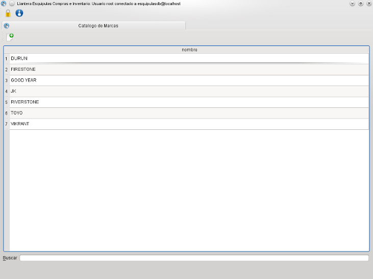
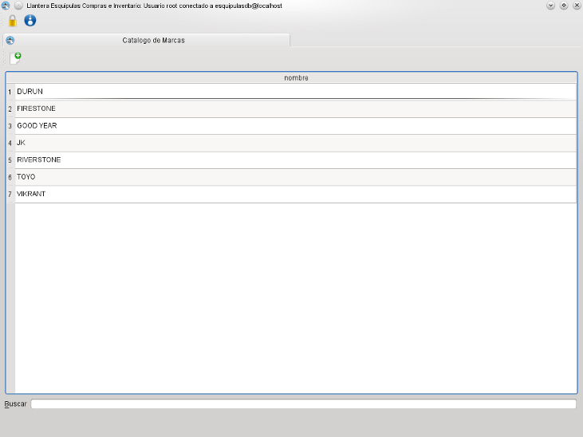

MIS Esquipulas Inventario: Catalogo de Marcas
El catalogo de marcas permite navegar y añadir
las marcas usadas en los articulos del sistema, para agregar una nueva marca de click el icono
Catalogo de Marcas
El catalogo de marcas permite navegar y añadir
las marcas usadas en los articulos del sistema, para agregar una nueva marca de click el icono
Catalogo de Marcas